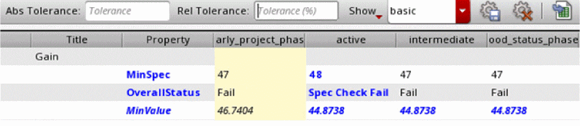
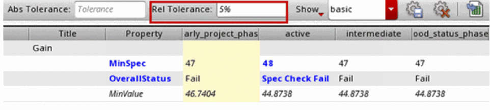
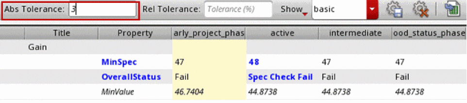
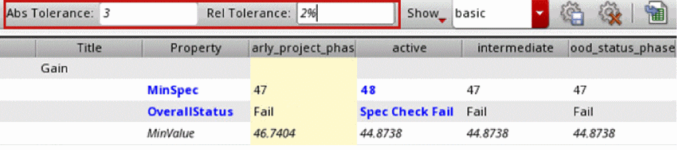
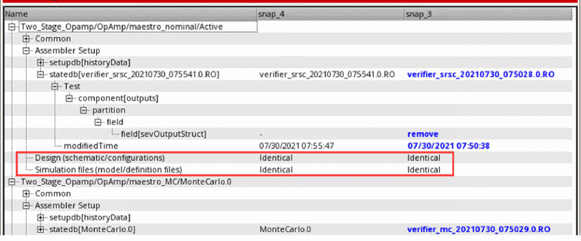

8
Snapshots in Virtuoso ADE Verifier
In ADE Verifier, a snapshot contains the following information:
-
Archive of the current requirements, mappings, and results as shown in the Results tab and stored in
snapshots.jsonfile
For every implemention, the following details are saved: -
Copy of the Verifier setup information (
settings.v3) -
Backup of the loaded run summary data files in the
resultsdirectory
When the run summary data file exists in theresultsdirectory of the current cellview and the project directory, Verifier creates a backup of the last modified run summary data file. Verifier uses this backup file when restore a snapshot in the current cellview. For more information, see Location of Run Summary Data. -
Archive of the current implementations, where the overall information is saved in the
implementations.jsonfile, when the includeImplementations environment variable is set tot. For every implementation, a backup containing the following details is also saved in theimplementations/<impLib_impCell_impView_impHistory>directory:
Verifier saves snapshots in a zipped format in the snapshots directory of a Verifier cellview. You can track and analyze the verification progress of your project by using snapshots that can be created, modified or accessed using the Snapshots workspace and the Snapshots tab. Comparing the progress at required intervals helps you choose the best approach to fulfill the project goals and requirements. Additionally, snapshots help you backup and restore your project and Verifier environment information.
These snapshots of your verification progress contain status information on a date and time. You can track the progress over these timestamps and compare results at different stages in the verification cycle. Snapshots also serve as a time-stamped backups of your setup. Use these backups to restore your active setup to a previous state. By taking a snapshot of your verification project at early stages, you can ensure that all requirements are the same and prevent unintended changes. You can also verify that results, before and after major software, environment or PDK changes, are the same.
Related Topics
Snapshots User Interface in ADE Verifier
Snapshot Management in ADE Verifier
Comparison of Design and Simulation Setup Differences between Snapshots
Exporting Snapshot Comparison Differences
Snapshots User Interface in ADE Verifier
The Snapshots user interface contains the following key elements:
Snapshots Toolbar
The Snapshots toolbar is available to the left in the Verifier window. Use this toolbar to manage your snapshots.
The following table describes the main controls of the Snapshots toolbar.
Accessing the Snapshots Toolbar
To access the Snapshots toolbar, do one of the following:
- Choose Window – Toolbars – Snapshots.
- Right-click anywhere on the Verifier toolbar and choose Toolbars – Snapshots.
- Choose Window – Workspaces – Snapshots.
- Choose Snapshots in the workspace list on the Verifier toolbar.
Snapshots Editor
The Snapshots Editor lets you edit information for the snapshots that you create.
The following columns are available in the Snapshot Editor assistant:
When you add a new snapshot, the Snapshots Editor displays the oldest snapshot in the top row and moves the active snapshot to the bottom of the snapshots list. Newly added snapshots are added above the active snapshot in the order of their creation time.
The following shortcut menu commands are available in the Snapshots Editor to let you manage snapshots in a Verifier cellview:
Accessing the Snapshots Editor Assistant
To access the Snapshots Editor assistant, do one of the following:
- Choose Window – Assistant – Snapshots.
- Right-click anywhere on the Verifier toolbar and choose Assistant – Snapshots.
- Choose Window – Workspaces – Snapshots.
- Choose Snapshots in the workspace list on the Verifier toolbar.
Snapshots Workspace
The Snapshots workspace makes the Verifier environment ready to edit and manage snapshots by opening the Snapshots toolbar and the Snapshots Editor.
Accessing the Snapshots Workspace
To open the Snapshots workspace, do one of the following:
- Choose Window – Workspaces – Snapshots.
- Choose Snapshots in the workspace list on the Verifier toolbar.
Snapshots Tab
The following figure shows the Snapshots tab:
The Snapshots tab contains the following columns:
Additional Information
- You can remove a snapshot from the Snapshots tab by deselecting the Visible check box in the Snapshots Editor assistant.
- You can drag and drop the columns in the Snapshots tab to change their location. The Hier column is frozen to the left.
- You can use the following shortcut menu commands in the Snapshots tab to expand or collapse the rows:
Snapshot Management in ADE Verifier
You can perform the following operations with snapshots in the Verifier environment:
After creating multiple snapshots in Verifier, you can compare the requirement properties using the Snapshots tab. Based on the comparison, you can make changes to your verification setup.
- Adding or Removing a Snapshot
- Renaming a Snapshot
- Setting a Reference Snapshot
- Adding Comments to a Snapshot
- Changing the Order of Snapshots
- Restoring a Snapshot
Adding or Removing a Snapshot
Observe that a new snapshot appears in the Snapshot Editor. The name of the snapshot is in the format <snap_yyyymmdd_hhmmss> where yyyymmdd shows the date and hhmmss shows the time. This ensures that each snapshot name is unique. For example, if you create a snapshot snap_20190727_103806 and create another snapshot immediately, the next snapshot is saved as snap_20190727_103807. The new snapshot becomes available for comparison in the Snapshots tab only after you select the Visible check box for this snapshot. To create snapshots automatically using SKILL, see
-
On the Snapshot Editor, right-click a snapshot and choose Delete Snapshot.
Verifier deletes the selected snapshot.
Renaming a Snapshot
-
On the Snapshot Editor, double-click the snapshot name.
The snapshot name appears highlighted. - Enter a new name for the snapshot or edit the default name.
-
Press Enter.
The new snapshot name appears in the Snapshot Editor.
Setting a Reference Snapshot
To set a snapshot as a reference:
Verifier sets the specified snapshot as the reference snapshot and highlights it with a yellow background. This is typically the snapshot that contains the correct specifications. Comparing values with the reference snapshot can help you to evaluate the changes made during the verification cycle.
Adding Comments to a Snapshot
To add comments to a snapshot:
- On the Snapshot Editor, select a snapshot.
- Double-click the Comments field and type in the comments.
- Press Enter.
Changing the Order of Snapshots
When there are multiple snapshots in the ADE Verifier setup, you can change the display order of snapshots in the Snapshots Editor assistant. By default, when you create a new snapshot, it appears to the right of existing snapshots in the Snapshots tab and is set as Visible.
To change the order of a snapshot:
- Select a snapshot header.
-
Drag and drop it to the required column.
The snapshot appears at the specified location.
Alternatively, deselect the Visible check box for all snapshots in the Snapshots Editor. This removes all snapshots from the Snapshots tab. Select the Visible check box for the snapshot that you want to appear first, and so on. The order in which the snapshots are displayed is determined by the order of selecting the Visible check box.
Restoring a Snapshot
- On the Snapshot Editor, right-click the snapshot from which you want to restore the setup and choose Restore Snapshot.
Verifier restores the setup from the specified snapshot. This overwrites the current setup. Using Restore Snapshot creates a snapshot with the suffix pre_restore as a precautionary measure. This is helpful when you have unsaved data for the date that you overwrite the active setup, or if you have accidentally chosen Restore Snapshot.
The Restore Snapshot command restores only the Verifier setup from settings.v3 and run summary data files from the results directory. The schematic designs and ADE Assembler views are not saved as a part of the snapshot.
Exporting Snapshots
This command exports the snapshot comparison table to a Microsoft Excel file. The exported file contains only the snapshots that are set to Visible.
The format of the data is identical in the Snapshots tab and the exported file. You can use the Excel file to analyze the snapshots data.
Related Topics
Changing the Order of Snapshots
Snapshot Comparison
The rows in the Snapshots tab show the property values set for each requirement in the hierarchy. While comparing the snapshots, you can use the following features of this tab:
The following table describes the features that help with snapshot comparison:
When comparing snapshots, Verifier uses only the data stored in a .json file. For more information on snapshots, see Snapshots in Virtuoso ADE Verifier.
Property Filters in Snapshots
The Snapshots tab lets you apply multiple filters to make a comprehensive comparison. You can use the Show filter to select the properties for comparison.
You can undock the Show list from the Snapshots tab and move it to a required location. This is particularly useful if you want to make multiple selections simultaneously in the list.
The list box to the right of the Show list contains the default configurations Differences, Extended Results, Results, Setup Details, and Specs. These configurations are installed in /cdssetup/dfII/verifier/snapshotsConfigs/*.json. Additionally, you can save the selected filters that you specify in the Show list box as a new configuration. You can save this configuration by specifying a name in the list box to the right of the Show list. The saved configuration contains the Show list settings as well as the tolerance settings. The new and updated configurations are saved in the .cadence directory of the current directory. If you delete a configuration, it is removed from the current session in memory and the .cadence directory of the current directory. If you save the configuration to a different location, it is shown in the list box the next time you open the cellview.
The available filters in the Show list are:
- Differences: Shows only those property values for requirements that have a difference or have a child requirement with a difference.
- Compare Visible Properties: Uses only the visible properties of requirements for comparison. If you deselect this filter, it is possible that the comparison in the Snapshots tab shows differences in some requirements but the required property is not visible.
- Hide Empty Rows: Hides the rows that do not have property values. All empty rows are hidden by default.
- Show all Properties: Shows all properties for requirements.
- Hide all Properties: Hides all properties for requirements.
- Property List: Shows the rows with the selected property. You can select multiple properties.
You can easily set up and save different configurations for the Snapshots tab. You can quickly generate configuration setups for different comparison scenarios using the different filters and properties.
Case 1: You have a Verifier cellview that contains an ideal set of specifications. You create a snapshot and define it as a reference snapshot. You might then run simulations and create new snapshots. To ensure that the required specifications are unmodified during the project run time, you compare all snapshots by selecting the following configuration on the Snapshots tab:
- Show – Differences
- Show – Compare Visible Properties
- Show – Hide Empty Rows
- Show – MinSpec
- Show – MaxSpec
The following figure shows an example of a comparison using the above configuration.
The Snapshots tab displays no results if the specifications remain the same. You only see results when a property specification is modified. Here, Compare Visible Properties is useful because you want to compare only specifications.
Case 2: You have a PDK upgrade scheduled and you want to ensure that there are no changes in result values before and after this upgrade. You run simulations and take a snapshot before the PDK upgrade. After the upgrade, you run simulations again and take another snapshot.
To check for any change in simulation results before and after the upgrade, you select the following configuration on the Snapshots tab:
The following illustration shows an example of a comparison of simulation results that are saved before and after PDK upgrade using the above configuration.
Observe that Compare Visible Properties is not selected. This means that the comparison is done for visible and non-visible properties, and highlights differences for even those properties which are not selected in the current configuration.
To make other comparisons in property values, select the property in the Show list. The Snapshots tab dynamically updates with the additional property values. To analyze changes in all property values, choose Show – Show All Properties.
The following figure shows a comparison of simulations results that are saved before and after PDK upgrade, for all properties.
The above illustration shows all properties as selected but highlights only the property values for History and ResultDataAge as differences. This implies that only these two properties have differences after the PDK upgrade.
Additionally, you might want to use tolerance settings to filter out minor changes in the result values.
Case 3: You want to monitor the progress of your project over different time intervals, and you take a snapshot every Friday with the following configuration:
The following figure shows an example of a comparison of specifications and results with the above configuration:
Observe that this configuration does not include Differences and Compare Visible Differences because you want to see all the values for all available snapshots. This configuration shows the values of the selected properties even if they have not changed in comparison to the reference snapshot.
You can use Export Snapshots to Excel on the Snapshots tab to visualize the progress graphically.
In addition to the above filters, use the Filter Rows command from the Verifier toolbar to display requirements or values based on the specified filter text.
Application of Tolerance Values in Snapshots
When you specify tolerances, the Snapshots tab shows the differences in property values of available snapshots after considering the specified tolerance. When you do not specify a tolerance value, the Snapshots tab highlights the specification value differences.
The following figures show the changes in the Snapshots tab when you apply tolerances:
-
No tolerance:
Differences in specification values are always highlighted. -
Relative tolerance:
 -
Absolute tolerance:
 -
Relative and absolute tolerance:

The Abs Tolerance and Rel Tolerance fields on the Snapshots tab and the rows in the Snapshots table with tolerance values applied appear in italics. The tolerance fields also show tooltips listing the properties to which the tolerances are applied.
By default, tolerances are applied only to MinValue, TypicalValue, and MaxValue. Other properties, such as the MinSpec and MaxSpec values, are compared without applying tolerances. To make changes to the properties that have tolerances applied, use the environment variable toleranceProperties.
Modification of the Active Setup in the Snapshots Workspace
Snapshots are specially useful when you can modify your active setup based on the snapshot comparison results. When you select a row on the Snapshots tab, the Information and Requirements Editor assistants show the active setup details corresponding to the selected row. The Information assistant shows read-only details of the selection. The Requirements Editor lets you modify the active setup values for the selection in the Snapshots tab.
Comparison of Design and Simulation Setup Differences between Snapshots
Using snapshots, you can track the verification status of a project over a period. But the information in snapshots can change because of several factors, such as a change in the design, maestro setup, model files, verification plan, or mapping.
The Compare Implementations from Snapshots feature in ADE Verifier lets you save the implementations into snapshots and then lets you compare the implementations from these snapshots.
Prerequisites for Snapshot Comparison
The comparison of snapshots is available with the following conditions:
-
Additional design and ADE Assembler setup data for implementations are saved within snapshots.
You can enable this by setting theincludeImplementationsenvironment variable tot. -
Separate history management is enabled in the maestro simulation setup.
You can enable this by setting theuseSeparateHistoryFileManagementenvironment variable toall.
Comparing Design and Simulation Setup Differences
To compare a snapshot against the reference snapshot:
- Right-click a value in the snapshot that you want to compare and select Compare Implementations from Snapshots.
The Implementation Differences window opens.
The Compare Implementations to Snapshots command is disabled when you right-click anywhere on the reference snapshot column.
The window displays a detailed and categorized comparison of the information that has been saved in the snapshot under the following sections:
-
Common: Includes the basic information which is common to both snapshots. No comparison is done for this section. -
Design: Includes the schematic and configuration details -
Simulation Files: Includes the model files and definition files

The differences that are found in these sections are displayed in blue text. If there are no differences in a section, the window displays Identical in both the snapshot columns. Additionally, the simulations files are compared using an MD5 hash, and the design files are compared using the OA change counter.
The first column displays the name of the implementation, which is followed by a hierachical categorization of the compared information. While the Name column is automatically resized to fit contents, the other columns can be resized manually, as required.
Ignoring Elements or their Order when Comparing Implementations from Snapshots
When comparing implementations within snapshots, there may be some elements that you want to exclude from the comparison because they are not important for the verification status.
You can choose to ignore these elements from your design or simulation setup by doing the following:
- To control the sensitivity of the order of differences during comparison, use the impElementOrderSensitivity environment variable.
- To specify that disabled elements are to be ignored during implementation comparison, use the ignoreDisabledElements environment variable.
- To specify the elements to be ignored during the comparison of *.sdb files, use the ignoreImpSetupElements environment variable.
- To specify the elements to be ignored during the comparison of *.state files, use the ignoreImpStateElements environment variable.
Unique or fundamentally different elements are ignored by default. For example, uuid or history_name.
Exporting Snapshot Comparison Differences
The differences found during snapshot comparison can be export to a Microsoft Excel file. To do this:
The implementation differences are exported to a Microsoft Excel file. By default, the name of the exported file is differences_<date>_<time>.xlsx. It retains the same display format as the Implementation Differences window, and all differences are highlighted in blue text.
Return to top